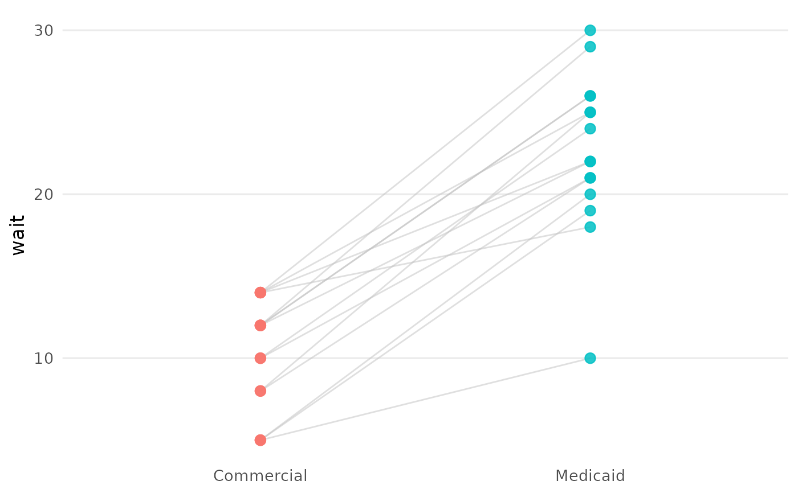

Within-cluster paired slope plot across scenarios
Source:R/plot_paired_slope.R
mysterycall_plot_paired_slope.RdThe visual companion to mysterycall_paired_wait_within_practice() and
mysterycall_paired_acceptance_mcnemar(): one line per cluster (practice)
connecting its outcome across the scenarios it was called under, over the raw
points. It shows the within-cluster differencing that motivates the matched
design – whether the same practice tends to schedule one persona sooner
than another – rather than the between-practice comparison a boxplot implies.
Only clusters observed under at least two scenarios are drawn (a single point
has no slope to show). Returns a ggplot2::ggplot().
Usage
mysterycall_plot_paired_slope(
data,
value,
group,
id,
title = NULL,
x_lab = NULL,
y_lab = value,
line_alpha = 0.5
)Arguments
- data
A long data frame: one row per cluster x scenario call.
- value
Character scalar naming the numeric outcome column.
- group
Character scalar naming the grouping / scenario column (the x axis).
- id
Character scalar naming the cluster / practice id column (lines are grouped by this).
- title, x_lab, y_lab
Character scalars for the title and axis labels.
titledefaults toNULL;x_labtoNULL;y_labtovalue.- line_alpha
Numeric opacity for the connecting lines. Default
0.5.
Value
A ggplot2::ggplot() object.
Examples
if (requireNamespace("ggplot2", quietly = TRUE)) {
d <- data.frame(
practice = rep(1:15, each = 2),
scenario = rep(c("Commercial", "Medicaid"), 15),
wait = c(rbind(rpois(15, 10), rpois(15, 22)))
)
mysterycall_plot_paired_slope(d, "wait", "scenario", "practice")
}
